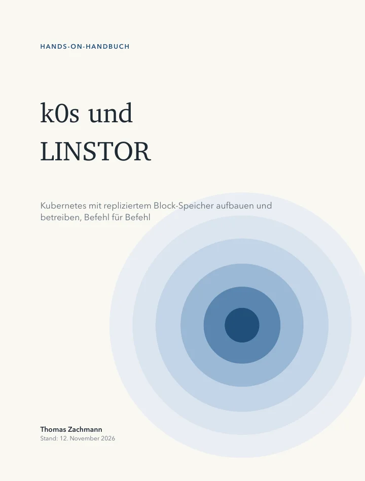

Hands-on-Handbuch · Kostenlos
k0s und LINSTOR
Kubernetes mit k0s und repliziertem Block-Speicher mit LINSTOR und DRBD, Befehl für Befehl aufgebaut auf vier VMs und danach absichtlich kaputtgemacht: Node-Ausfall, Netztrennung, Split-Brain, volle Volumes, Plattentausch und Updates.
- Umfang
- 147 Seiten · 19 Kapitel · Anhang
- Für
- k0s 1.36/1.37 · LINSTOR 1.33/1.35 · DRBD 9.3 · Piraeus 2.12
- Format
- PDF · 6,8 MB · Deutsch
- Stand
- November 2026
- Preis
- kostenlos
- Lizenz
- CC BY-ND 4.0
Kein Formular, keine E-Mail-Adresse, kein Newsletter. Der Link lädt die Datei direkt. Weitergabe der unveränderten Datei ist ausdrücklich erlaubt.
Alle Konfigurationsdateien und die Mitschnitte der Testläufe liegen im öffentlichen Repository github.com/thomaszachmann/k0s-linstor. Das Buch gehört zur Hands-On-Reihe bei Nyrvex.

Worum es geht
Speicher, der einen Ausfall übersteht
Datenbanken in Kubernetes brauchen Volumes, die einen ausgefallenen Server überleben. LINSTOR und DRBD spiegeln jeden Block synchron auf einen zweiten Server. Wie das mit k0s zusammenspielt, wenn LINSTOR außerhalb des Clusters auf den Hosts läuft und Kubernetes nur den CSI-Treiber bekommt, steht in keiner Anleitung an einer Stelle.
Das Buch baut genau diese Architektur auf: ein hochverfügbarer LINSTOR-Controller mit drbd-reactor und virtueller IP, zwei Zonen mit einer Witness, ein eigenes Storage-Netz und ein Schreibcache auf schnellem Speicher. Danach wird alles absichtlich kaputtgemacht. Zu jedem Fehler gibt es Symptom, Diagnose, Behebung und gemessene Ausfallzeiten aus dem Lab.
Vorausgesetzt werden Grundkenntnisse in Linux, LVM und Kubernetes.
Gebraucht werden vier Ubuntu-VMs und ein Laptop mit kubectl,
helm und k0sctl.
Inhalt
Von vier leeren VMs bis zum Plattentausch
- Kap. 1–4
- Fundament und k0s Architektur, Storage-Netz und LVM, k0s mit k0sctl, was auf Controller und Workern läuft.
- Kap. 5–8
- LINSTOR, Hochverfügbarkeit und CSI LINSTOR und DRBD als Host-Pakete, Controller-Failover mit drbd-reactor, Zonen, Witness und Writecache, Piraeus nur als CSI-Treiber mit vier Stolperfallen.
- Kap. 9–11
- Zustände und Ausfälle DRBD lesen, Node-Ausfall und Absturz, Netztrennung, Quorum, ein echtes Split-Brain und seine Auflösung.
- Kap. 12–15
- Betrieb Volle Volumes und Pools, Snapshots und Backup mit Velero, Plattentausch, Updates von LINSTOR, CSI und k0s in der richtigen Reihenfolge.
- Kap. 16–18
- Automatisierung und Produktion Ansible-Rollen, Monitoring mit Prometheus, Grafana und Loki, getestete Alarmregeln, was in Produktion anders ist.
Ehrlich gesagt
Was geprüft wurde und was nicht
- Durchgespielt. Im November 2026 wurde das ganze Buch auf vier Ubuntu-VMs Befehl für Befehl gebaut: Installation, Failover des Controllers, Absturz und Ausfall von Nodes, Netztrennung, Split-Brain, volle Volumes, Backup und Restore, Plattentausch und Updates. Alle Ausgaben im Buch stammen aus diesen Läufen.
- Nicht durchgespielt. Ein Lauf der Ansible-Rollen gegen einen leeren Node und mehrere k0s-Controller. Das Buch markiert diese Stellen.
Download
147 Seiten, kostenlos
Wenn Sie replizierten Speicher nicht im Lab, sondern für produktive Cluster aufbauen oder betreiben müssen: Ich mache das beruflich.